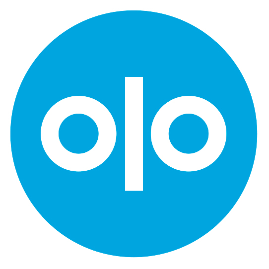
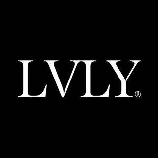

Tracy Dalick Irace
Product leader who thrives in growing organizations where my creativity, management experience, and eye for design can truly make a difference for our users. Over the past ten years, I’ve conceptualized–and most importantly, shipped–innovative products for some of the biggest and best companies in the world. My product sensibilities is complemented by deep understanding of user behaviors, business drivers and established and emerging technologies.
Olo
Olo builds the online ordering and delivery software that connects the biggest restaurant brands in the world to the on-demand world, allowing them to meet their customers wherever they are.
Senior Product Manager / Jan 2018 – Present
As a Senior Product Manager, I report to the VP of Product and am solely responsible for all on-site restaurant products. I’ve launched and continue to oversee products for both restaurant employees and end-customers. I work closely with our internal engineering, executive, and support teams, restaurant brands, and external partners to build fast, intuitive products where every second counts.
- Defined, launched, and continue to own Expo (video tour), Olo’s first entry into the front-of-house restaurant space. I’ve written all of the product specs and benchmarks, served as the initial interim engineering manager, and have done the majority of the product marketing.
- Gained a fundamental understanding of front-of-house employee needs through user testing, interviews, and on-site visits all over the country.
- Obsessed over product metrics and their ability to drive operational improvements. Reduced customer wait time by 10% with our arrival notifications feature.
- Successfully advocated for using Olo as a wedge to drive adoption of additional in-house products. Launched a companion digital order POS product and have ghost kitchen/marketplace handoff products in development.
Peloton
Peloton is a fitness technology company that offers live and on-demand workouts to users across the world. The core offering is an at-home spin bike which live streams classes from a studio in New York City. The classes are interactive and provide realtime metrics to both riders and instructors.
Product Manager / Jun 2016 – Jan 2018
As a Product Manager, I reported to the VP of Product and was responsible for features and policies associated with user engagement and retention. This included adding or enhancing features on the Android tablet attached to our at-home bikes, as well as our web experience. Additionally, I was responsible for the software used by our 15 instructors and 60 in-studio bikes. I worked closely with the executive, marketing, support, business intelligence, and hardware teams to define and deliver the best technology and experience for all of our users.
- Solely manage the end-to-end product lifecycle for the web engagement software team. This includes defining features, prioritizing projects, continuously releasing enhancements, and analyzing launched products.
-
Pioneered a new referral program, which increased referrals by 15%, reduced the cost of acquiring users by $87 compared to the previous program, and increased the lifetime value of users who purchased through the program.
- Produced a fully redesigned tablet for our instructors that minimized superfluous actions and enabled them to react efficiently to rider actions, strengthening one of our company’s core value propositions.
- Reduced inbound calls to the customer service team by 8% by analyzing support inquiries and updating the flow for adding additional riders to a bike.
Huge
Huge is a digital consultancy that provides strategy, design, marketing, and technology services to some of the world's largest businesses and best known brands (I’ve worked with Apple, American Express, Gucci, Lexus, S. C. Johnson, and TD Ameritrade, to name a few).
Product Manager / Jan 2014 – Jun 2016
As a Product Manager, I reported to the Director of Product and was responsible for defining and delivering the right products for my clients and their customers by turning goals and objectives into roadmaps and scopes, then executing them by facilitating collaboration between stakeholders, designers, and engineers.
-
Reduced costs while leading fast-paced, cross-functional teams through all project phases, improving processes and eliminating inefficiencies, leading to sharp work delivered ahead of schedule.
- Increased e-commerce sales while decreasing development costs, by identifying when existing products could be optimized and redesigned, rather than reimplemented entirely.
- Produced innovative products and solved problems with keen design instincts, product taste, and principled thinking, delighting clients and end users.
- Developed test scenarios for user testing prototypes, resulting in quick pivots to a more intuitive user experience and increased conversation rates.
- Maintained a competitive edge by adopting agile development methodologies, A/B testing, and continuous deployment.
- Fostered productive client relationships by being poised, adaptable, and approachable, earning the trust, guidance, and control of their most important projects.
- Managed three direct reports over two years, aided career development, and provided support and guidance in challenging situations.
Senior Business Analyst / Apr 2013 – Jan 2014
As a Senior Business Analyst, I reported to the Group Director of Product and was responsible for converting product visions into requirements, owning the agile product backlog, and managing the team’s milestones and deadlines.
- Created internal execution plans by synthesizing team resources and capabilities, roadmap, and scope, in order to deliver concrete projects on time and on budget.
- Distilled requirements and feedback from stakeholder interviews, demos, and feature prioritization exercises into actionable user stories and specifications, enabling designers and engineers to exceed client expectations and measurement goals.
- Managed an imaginative CLIO award-winning project that required coordination across numerous third- parties, elevating the client’s brand across various channels.
- Shaped products through decisive judgment calls and high usability and design standards, earning the trust and confidence of my clients and internal team.
- Prioritized team morale during tremendously difficult circumstances, delivering a product that met our high standards despite the adversity.
Cumberland Consulting Group
Cumberland Consulting Group is a national technology implementation and project management firm servicing the healthcare industry.
Managing Consultant / Aug 2010 – Apr 2012
As a Managing Consultant, I reported to a partner of the firm and was responsible for gathering and executing product requirements, creating wireframes, and performing user testing.
- Increased provider visits by 35% reduced operating costs, and automated the Medicare approval process by developing and deploying a native mobile application.
- Synthesized KPIs and requirements from 40+ stakeholders to create a comprehensive yet focused BRD, and translated it to actionable specifications for engineering teams.
- Created enhancement reports and user experience recommendations for stakeholders and the technology team by reviewing analytics and facilitating focus groups and interviews.
- Inspired and motivated end-users by displaying empathy and understanding during training sessions.
- Influenced stakeholder decisions through clear and calm communication across many channels.
MediaCom
MediaCom is a global media agency that provides planning and strategy, digital marketing, and consumer insights for national clients.
Insights and Analytics Intern / Feb 2010 – Jun 2010
As an Insights and Analytics Intern, I reported to the Analytics Lead and was responsible for monthly reports detailing campaign analytics and potential optimizations, which were supported by industry research, campaign KPIs, and the brand strategy plan for GlaxoSmithKline.
- Increased brand engagement through learning from A/B and multivariate testing.
- Delivered learning assessments which increased multiple KPIs (unique visitors, user engagement, navigation flows, etc.) by analyzing data and understanding marketplace trends.
- Collaborated with design and content teams to iterate on digital initiatives to provide results for the client.
- Performed as a full-time employee by learning quickly, showing attention to detail, and anticipating requests.
BlueRock
BlueRock, part of LVLY, is a creative editing agency with clients including FedEx, Toyota, Yahoo, and many more.
Business Development Intern / Jun 2009 – Nov 2009
As a Business Development Intern, I was responsible for defining and executing a social media strategy and developing an internal tool to track client engagement.
- Created a social brand voice and identity through competitor analysis, social trends, and vision from the CEO, which increased the brand awareness.
- Submitted weekly status reports to the CEO detailing the week’s findings in a digestible format.
- Analyzed client information and developed the specification for an internal tool which simplified client management and increased productivity for the client services team.
Pace University
Masters in Business Administration / 2008 – 2010
Pace University is a private university with its main campus in New York City. I attended the Lubin School of Business for my MBA.
 University of Central Florida
University of Central Florida
Bachelor of Science, Business Administration / 2003 – 2007
The University of Central Florida is a public research university in unincorporated Orange County, Florida. I attended as an undergraduate, majoring in business administration and minoring in sociology.